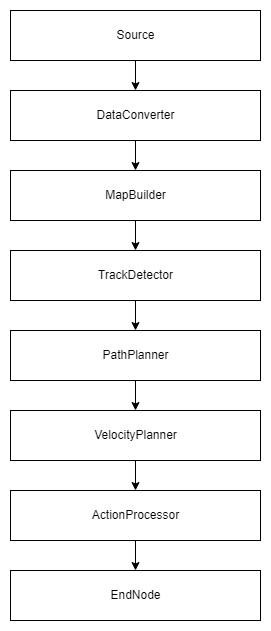

Overview
Architecture

Nodes
Data Sources
| Node | Description | Outputs |
|---|---|---|
| PythonSource | this module obtains its data directly from the simulator and publishes the requested data in the pipeline | DataID.LIDAR_DATA, DataID.ODOMETRY_DATA, DataID.REFEREE_STATE |
| RosSource | this module obtains its data from the Ros Bridge and publishes the requested data in the pipeline | DataID.LIDAR_DATA, DataID.ODOMETRY_DATA |
Processors
| Node | Description | Input | Output |
|---|---|---|---|
| ActionProcessor | This module calculates the control data necessary to follow the driving profile | DataID.TRACKPOINT_MAP, DataID.ODOMETRY_DATA, DataID.Z_ORIENTATION, DataID.VECTORCHAIN_FINISHED, DataID.MIN_CURVE_PATH, DataID.VELOCITY_PROFILE | DataID.STEERING_DATA, DataID.THROTTLE_DATA, DataID.BRAKE_DATA |
| DataConverter | this module corrects the sensor position of the lidar and provisionally takes over the preclustering of the current data | DataID.LIDAR_DATA, DataID.ODOMETRY_DATA | DataID.Z_ORIENTATION, DataID.CONE_DATA |
| MapBuilder | this module creates a map based on the relative coordinates of the cones | DataID.CONE_DATA, DataID.ODOMETRY_DATA, DataID.Z_ORIENTATION, DataID.REFEREE_STATE | DataID.CONE_MAP |
| PathPlanner | this module calculates the racing line once after the first lap in a new thread | DataID.TRACKPOINT_MAP, DataID.VECTORCHAIN_FINISHED | DataID.MIN_CURVE_PATH |
| PathPlanningConverter | This module deals with the conversion of the recorded map for further processing. This is only needed for testing purposes. | DataID.CONE_MAP | DataID.CONE_MAP |
| RecordingSelector | This module is used to select the data sets to be recorded | DataID.LIDAR_DATA, DataID.ODOMETRY_DATA | - |
| TrackDetector | this module deals with the recognition of the track and its boundaries | DataID.CONE_MAP | DataID.YELLOW_BORDER, DataID.BLUE_BORDER, DataID.TRACKPOINT_MAP, DataID.VECTORCHAIN_FINISHED |
| VelocityPlanner | This module calculates a velocity profile for the corresponding track, under consideration of the car's limitations | DataID.MIN_CURVE_PATH | DataID.VELOCITY_PROFILE |
EndNodes
| Node | Description | Input |
|---|---|---|
| PathVisualizer | This module displays the conemap and the corresponding racing line with speed values | DataID.TRACKPOINT_MAP, DataID.VECTORCHAIN_FINISHED, DataID.CONE_MAP, DataID.VELOCITY_PROFILE |
| PythonController | This module transmits the control data to the simulator | DataID.STEERING_DATA, DataID.THROTTLE_DATA,DataID.BRAKE_DATA |